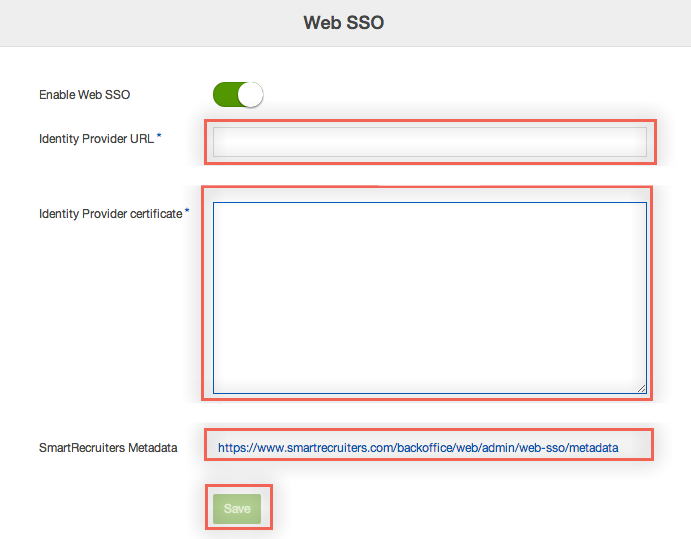
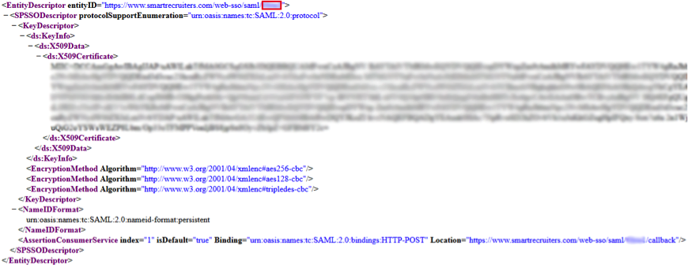
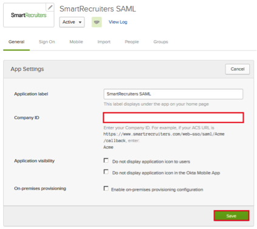

On the Web SSO configuration page:

Enter the following values:
Identity Provider URL: Copy and paste the following into this field: Sign into the Okta Admin Dashboard to generate this variable.
Sign into the Okta Admin Dashboard to generate this variable.

In Okta, open the General tab for the SmartRecruiters app, and paste your Company ID (retrieved earlier) into the corresponding field.

Notes:
SP-initiated flows and IDP-initiated flows are supported.
Just in Time (JIT) provisioning is not supported.
For SP-initiated flows, go to https://www.smartrecruiters.com/web-sso/saml/[yourCompanyID]/login.